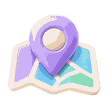

다국어 이름은 직접 입력하고 수정할 수 있습니다.
로그인하지 않음
로컬 장소만 표시
계정별 클라우드 장소는 로그인한 동안만 표시됩니다. 삭제 장소는 30일 동안 복원할 수 있습니다.
현재 기기·브라우저의 일본어 음성을 선택합니다. 선택은 이 브라우저에 저장됩니다.
Android에서는 사용 가능한 일본어 음성을 모두 표시합니다. Mac·iPhone·iPad의 Chrome에서는 Kyoko 음성을 표시합니다. 이름은 브라우저가 제공한 그대로이며, 같은 이름도 서로 다른 음성이면 각각 선택할 수 있습니다. 미리 듣기로 비교하세요.
위치 핀은 공유 링크의 좌표를 기준으로 표시됩니다. Google 지도 미리보기는 온라인 연결이 필요하며, 브라우저 환경에 따라 표시가 제한될 수 있습니다.